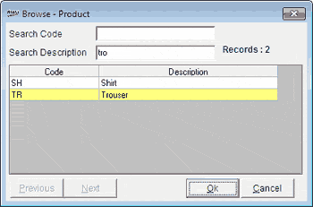

The Browse window is as shown. The title of the window shows the item classification for which the browse is active.

Search Code: Enter the code you are searching for. As you continue typing, the value is located, in the list of rows displayed in the grid, based on the partial match and an yellow bar identifies the located row.
Search Description: Enter the description you are searching for. As you continue typing, the value is located, in the list of rows displayed in the grid, based on the partial match and an yellow bar identifies the located row.
Note: In case the value is not found in the current set of rows, click Next to load the next set of rows.
Tip: Enter the initial part of the code in the column of the parent window where you pressed F2, to display the list of values matching the part of the code.
Records: Displays the number of unique values in the item classification for which the browse is active. In case there are more than 1000 records, the value is displayed as 1000/n.
The grid displays the list of codes and descriptions in the selected item classification. A maximum of 1000 rows can be displayed in the grid at a time. In case there are more than 1000 rows, use Previous or Next to load a different set of rows.
Previous: Click to load the previous set of rows in the grid. This button is enabled only when there are more than 1000 unique values in the selected item classification and you have moved to a set of rows other than the first 1000 rows.
Next: Click to load the next set of rows in the grid. This button is enabled only when there are more than 1000 unique values in the selected item classification and you are not on the last set of rows.